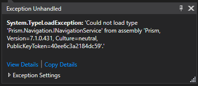
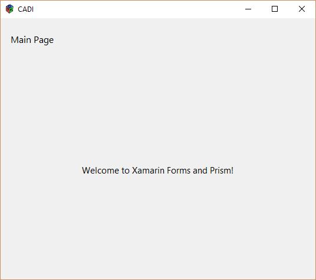

I’m working on project to replace my car radio with a custom digital dashboard. I’m building it on a RaspberryPi and would really like to use Xamarin.Forms and Prism, so I started out with adding a GTK# frontend to my Xamarin.Forms project.
Adding the GTK# Backend Project
Before we can add the GTK# project we need to actually install the GTK# libraries. Head over to The Mono Project to download and run the GTK# for .NET installer for Windows.
Now that we have GTK# installed on our machine we need to add a new project to our solution for the GTK backend. Go to File->New Project, select Windows Desktop from the tree and choose Class Library (.NET Framework). Make sure to select .NET Framework 4.7 or higher. Name the project something useful, in my case Cadi.UI.Gtk and click ok. Once the project is added we need to add a reference to Prism, Xamarin.Forms, and the Xamarin.Forms GTK backend. In my case, I’m using DryIoc, so I added the following packages:
- Prism.DryIoc.Forms
- Prism.Forms
- Prism.Core
- DryIoc.dll
- Xamarin.Forms
- Xamarin.Forms.Platform.GTK
Next we need to manually add DLL references to the GTK Sharp library files we installed earlier. You want to add a reference to the following DLLs from the GTK# install folder (typically C:\Program Files (x86)\GtkSharp\2.12\lib\gtk-sharp-2.0):
- atk-sharp.dll
- gdk-sharp.dll
- glade-sharp.dll
- glib-sharp.dll
- gtk-dotnet.dll
- gtk-sharp.dll
Setup Startup Code
Now that you have the needed references you need to add a Program class (or rename the default Class1.cs) with a Main method that loads the Xamarin.Forms and GTK libraries and starts up your app. This is also a good time to add an IPlatformInitializer for your GTK project.
public class Program
{
[STAThread]
public static void Main(string[] args)
{
Gtk.Application.Init();
Forms.Init();
var app = new App(new GtkInitializer());
var window = new FormsWindow();
window.LoadApplication(app);
window.SetApplicationTitle("Your App Name");
window.Show();
Gtk.Application.Run();
}
}
public class GtkInitializer : IPlatformInitializer
{
public void RegisterTypes(IContainerRegistry containerRegistry)
{
// Register any platform specific implementations
}
}After we’ve made these changes we need to go to the project properties and change the Output Type from ‘Class Library’ to ‘Windows Application’.
Build & Run
At this point you are probably thinking you can select your new project for startup and hit run, right? If you do you will get this error message: System.TypeLoadException: 'Could not load type 'Prism.Navigation.INavigationService' from assembly 'Prism, Version=7.1.0.431 ... '

Turns out that we inadvertently are loading the desktop/WPF version of Prism, thanks to how NuGet works it’s magic, and that fact that this is, after all, a regular Windows console app project using .NET. This is actually an easy fix, but does require editing our project file. To begin, right click on the GTK project and select Unload Project. You’ll now have a grayed out entry for the project, right click on it and select edit (ProjectName).csproj. We are looking for the hint paths for the DLLs from the Prism package: Prism & Prism.Forms.
We want to go from references like these (..\packages\Prism.Core.7.1.0.431\lib\net45\*.dll):
<Reference Include="Prism, Version=7.1.0.431, Culture=neutral, PublicKeyToken=40ee6c3a2184dc59, processorArchitecture=MSIL">
<HintPath>..\packages\Prism.Core.7.1.0.431\lib\net45\Prism.dll</HintPath>
</Reference>
<Reference Include="Prism.Forms, Version=7.1.0.431, Culture=neutral, processorArchitecture=MSIL">
<HintPath>..\packages\Prism.Forms.7.1.0.431\lib\net45\Prism.Forms.dll</HintPath>
</Reference>To NetStandard 2.0 references like these (..\packages\Prism.Core.7.1.0.431\lib\netstandard2.0\*.dll):
<Reference Include="Prism, Version=7.1.0.431, Culture=neutral, PublicKeyToken=40ee6c3a2184dc59, processorArchitecture=MSIL">
<HintPath>..\packages\Prism.Core.7.1.0.431\lib\netstandard2.0\Prism.dll</HintPath>
</Reference>
<Reference Include="Prism.Forms, Version=7.1.0.431, Culture=neutral, processorArchitecture=MSIL">
<HintPath>..\packages\Prism.Forms.7.1.0.431\lib\netstandard2.0\Prism.Forms.dll</HintPath>
</Reference>Success
Now right click the project node and select Reload Project. After it loads do a Rebuild and run it again and you will be rewarded with your app running!

I hope this get’s you on your way to playing with Xamrin.Forms and Prism on GTK. Up next is getting the project to run in Linux and on the RaspberryPi, stay tuned!
TL;DR;
You need to manually edit your GTK project’s csproj and switch the Prism.dll and Prism.Forms.dll from net45 to netstandard2.0 via the hint path.
comments powered by Disqus